Subteam Overview
Our work right now is in Barrio San Cristobal, Bolivia, a community of 250 that has experienced inadequate drinking water and sanitation infrastructure since it was founded over ten years ago. We identified the problem on a Spring 2025 assessment trip: the community’s only drinking water well had been contaminated with coliforms, and unlined latrines were the likely cause.
In Summer 2026 we went back to address this. Over a three-week implementation trip, the team constructed a two-room public restroom with flushing toilets, a septic tank, and a leach field, all designed by our team in AutoCAD and Civil3D. This is the first crucial step in ensuring that waste in San Cristobal is properly managed to protect drinking water resources from the contamination that made the old well unsafe.
That trip also surfaced the next problem; talking with residents and the community’s Water Committee, we learned the 15-year-old pipe network cannot handle the pressure from the new water tower and routinely ruptures, cutting off drinking water for days at a time. We are redesigning the piping system now with plans to return to Bolivia in Summer 2027 to begin construction.
Our previous project, a solar-powered irrigation system for the farming cooperative in Sunuka, Tanzania, was closed in 2024.
From the Field
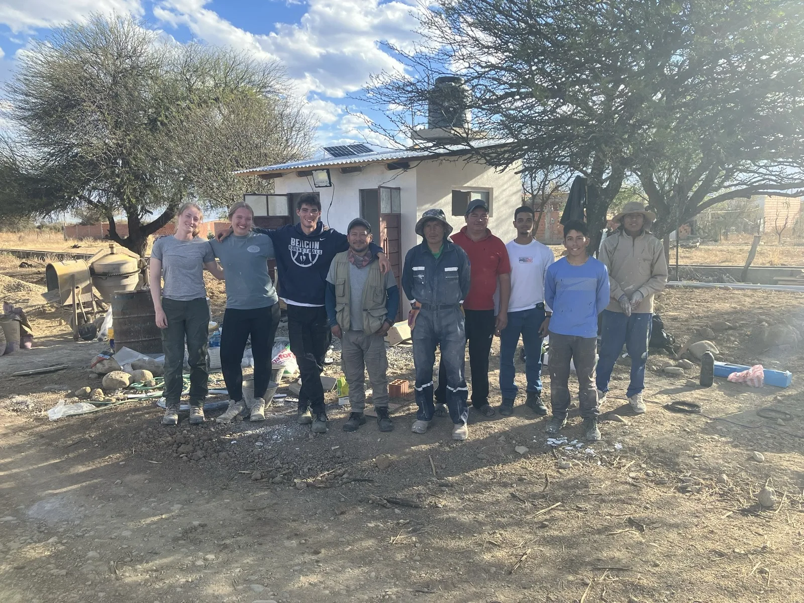
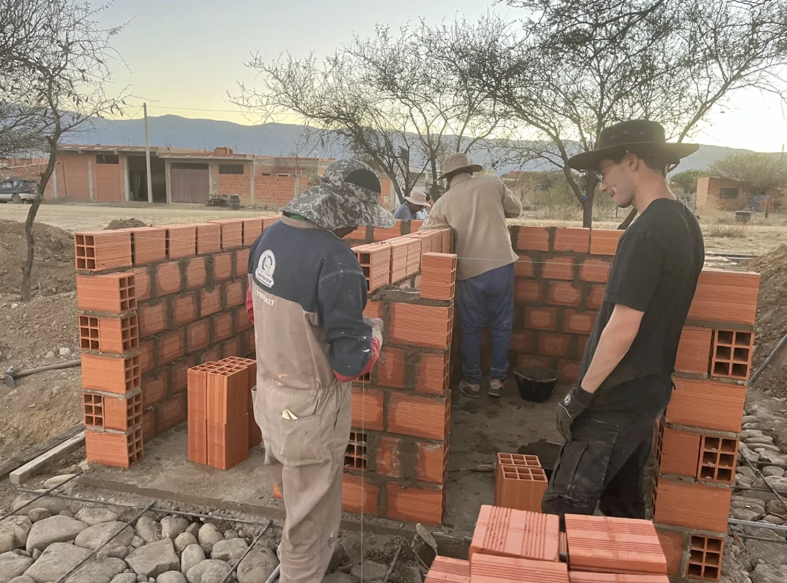
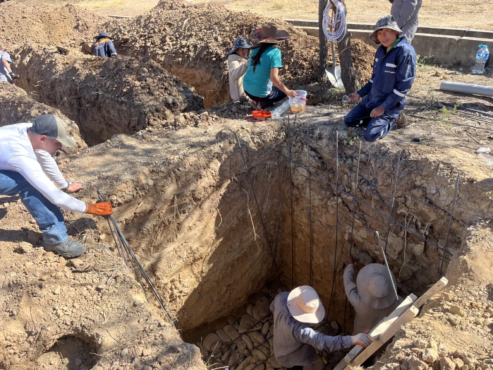
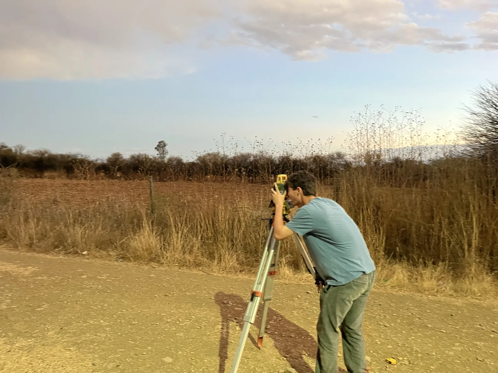
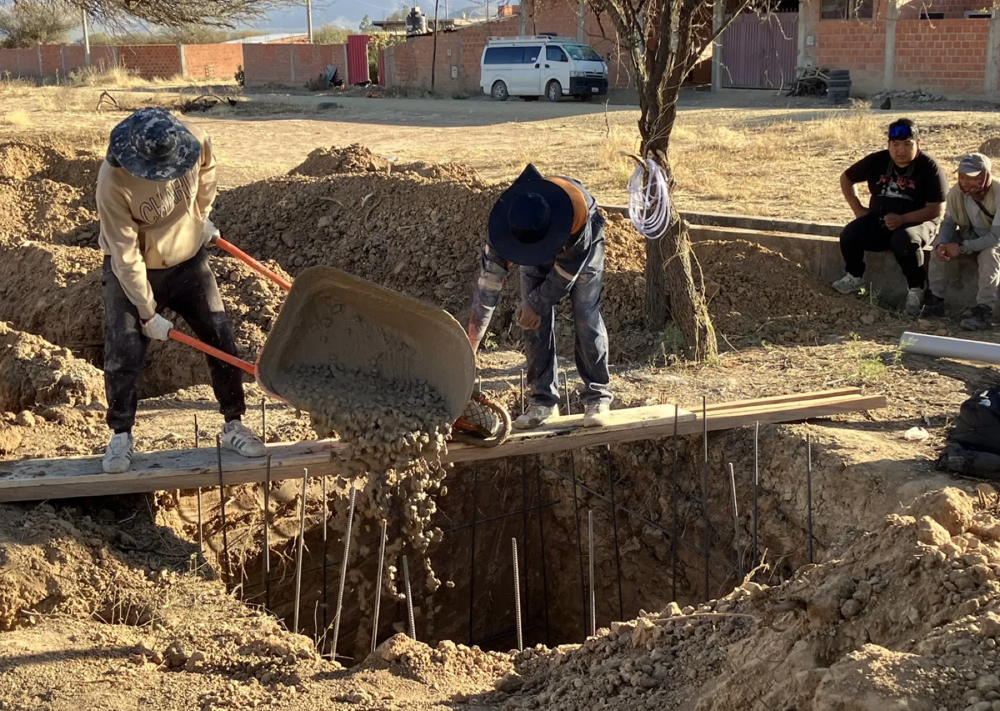
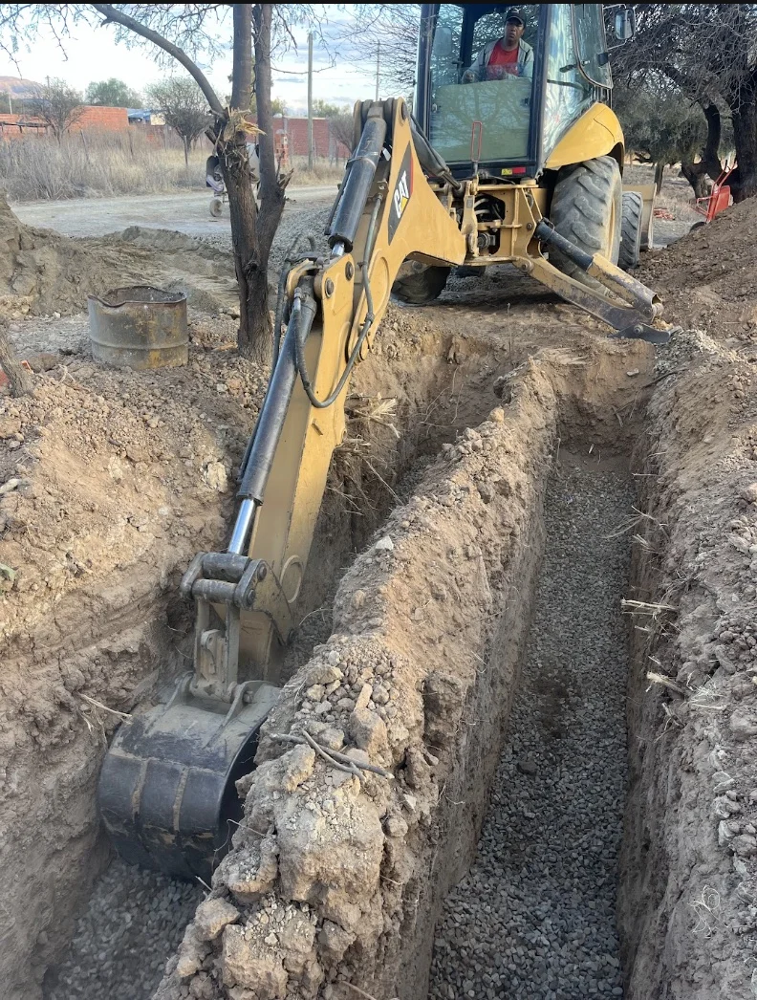
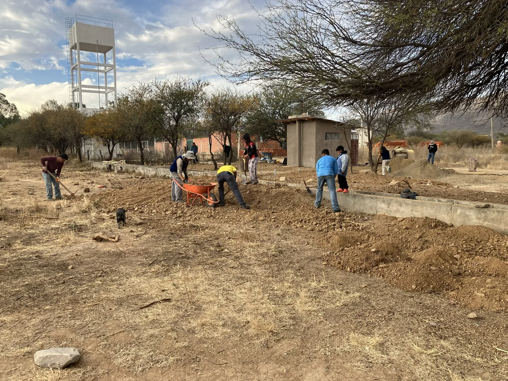
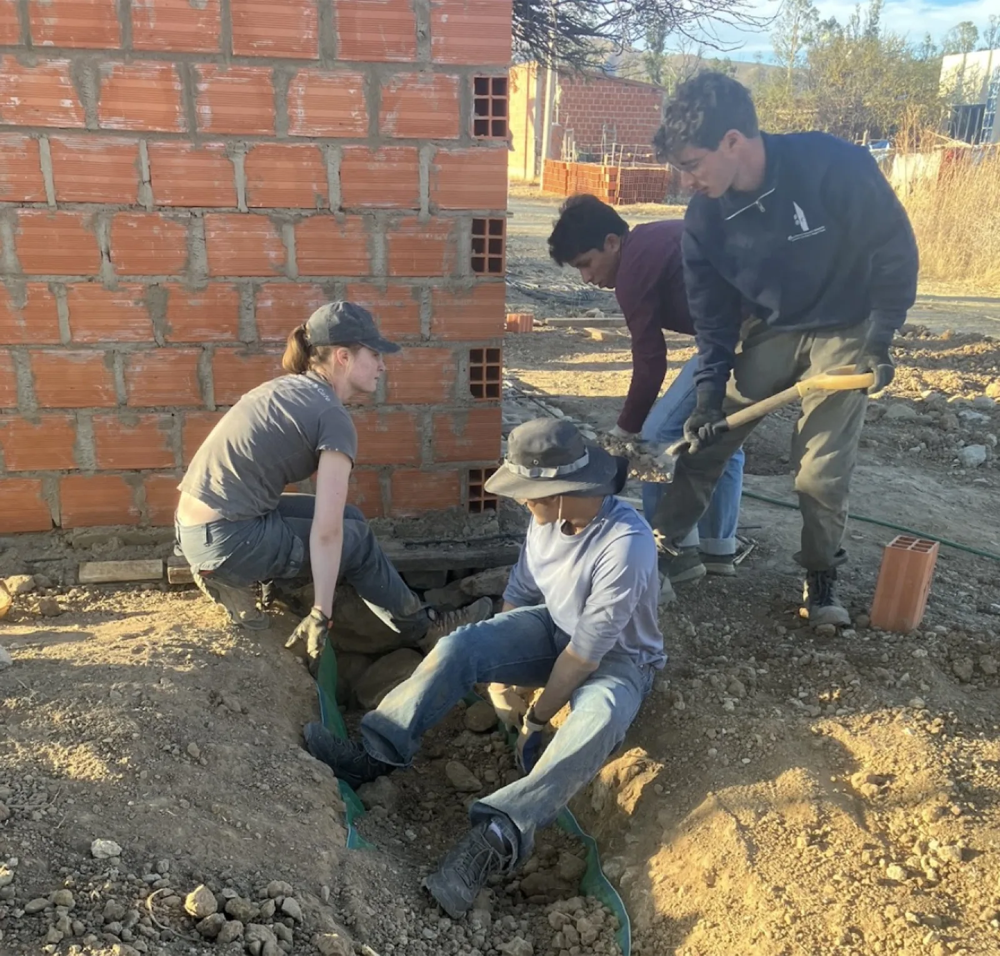
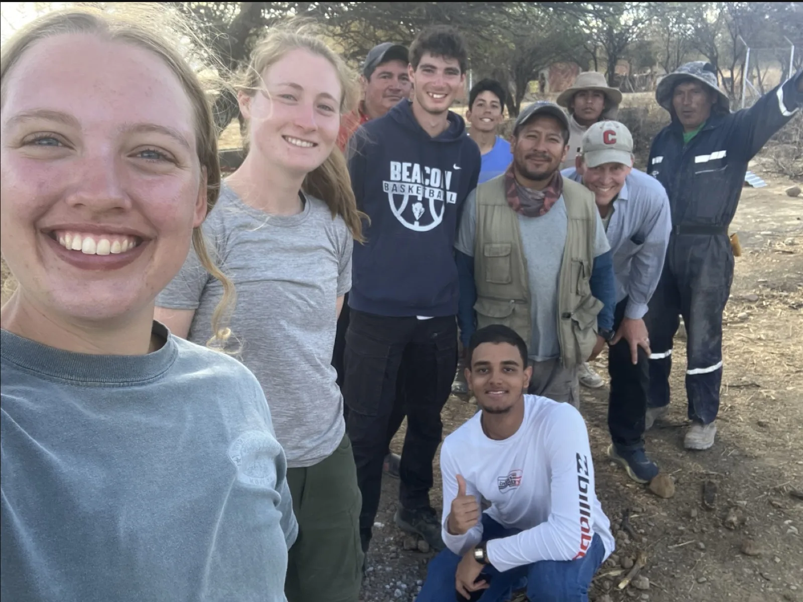
Meet the Subteam
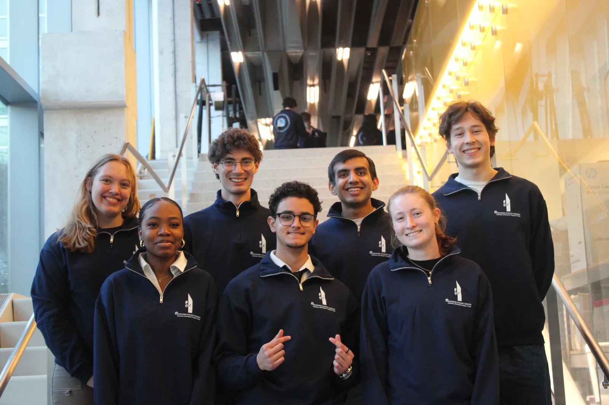
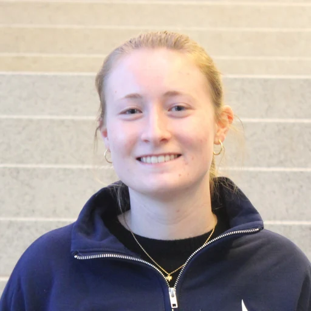
Class of 2028
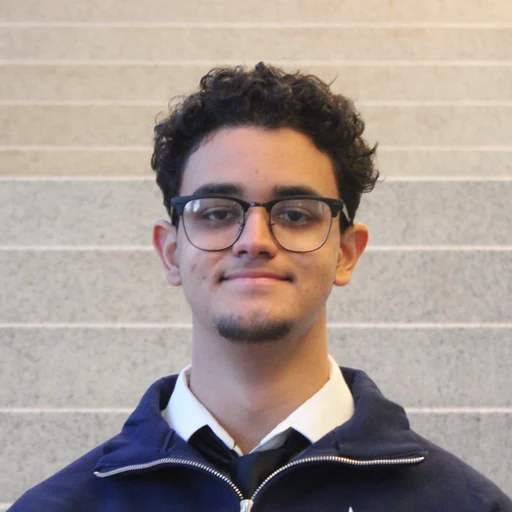
Class of 2028
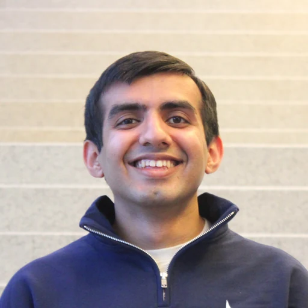
Class of 2029
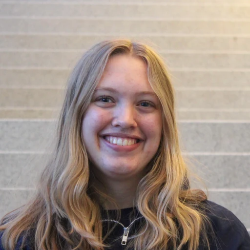
Class of 2029
Class of 2029
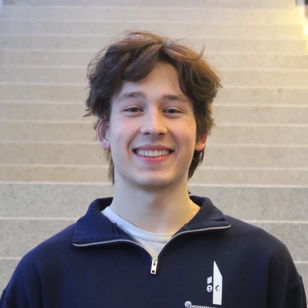
Class of 2028
Class of 2028
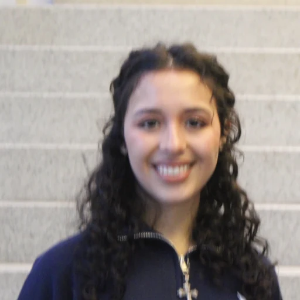
Class of 2027
Active Projects
Bolivia
The 250-person community of Barrio San Cristobal, Bolivia has struggled with access to safe and reliable drinking water and sanitation services since its establishment over ten years ago.
The need for improved access to water and sanitation services was identified after our Spring 2025 Site Assessment Trip, when we met with 30+ households, to understand the community’s infrastructure priorities. At the time, the community’s main source of drinking water was a well that had been contaminated with coliform and was unsafe to continue drinking. This contamination was likely due to the use of unlined latrines to manage human waste, which allowed pathogens to leach into groundwater. With the help of the local government, community leadership was finalizing plans to construct a new, deeper well and water towers that would increase the quality and reliability of the drinking water. However, there were no plans in place to address the root cause of the contamination – unsustainable waste management practices.
Throughout the course of the year, culminating in a construction Implementation Trip in the summer of 2026, EWB Cornell designed and built a public restroom and attached septic system to ensure that waste is safely managed and does not contaminate this new well. Using software such as AutoCAD and Civil3D, team members designed a two-room restroom with flushing toilets, a septic tank, and a leach field, ultimately traveling to Barrio San Cristobal to successfully build the restroom during a three-week trip.
On this 2026 trip, the team saw the newly installed well and water tower but learned through conversations with residents and the community’s Water Committee that the 15-year-old pipe system connected to the new well has frequently been breaking, causing drinking water loss for multiple days at a time. The old pipes are unable to withstand the increased pressure caused by the new water tower and are unlikely to be able to support the community much longer. In addition to continuing sanitation development, EWB Cornell is now working on redesigning the water piping system to address these issues and will return to Bolivia in the summer of 2027 to begin construction.
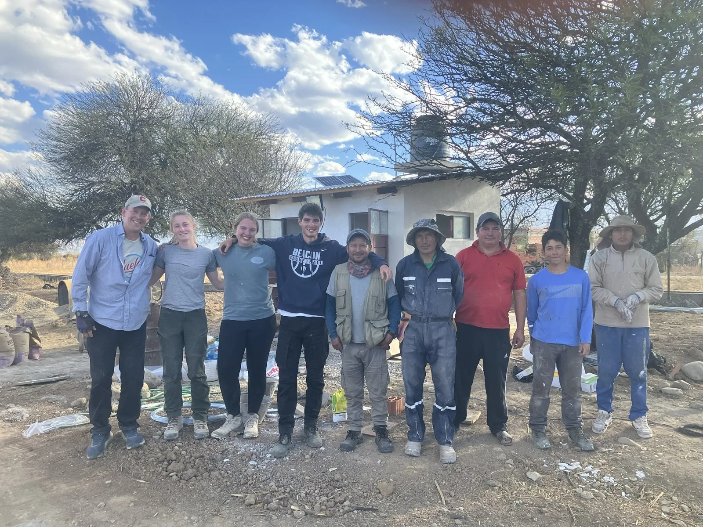
Want to join the International Subteam?
We take engineers and non-engineers interested in international infrastructure work.